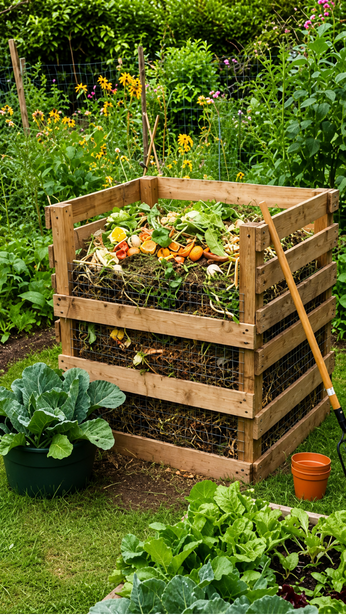
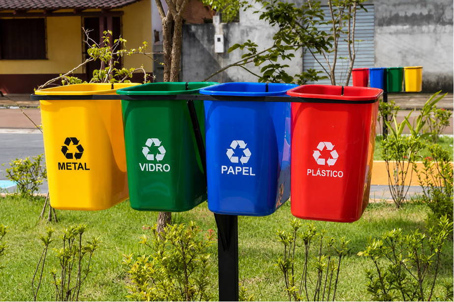
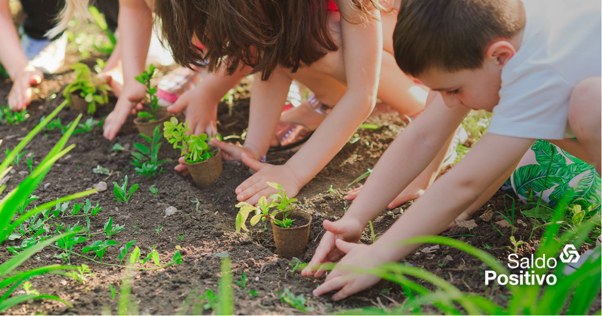

COMPOSTAGEM
Processo natural de decomposição de resíduos orgânicos, como restos de alimentos e folhas, transformando-os em um material rico em nutrientes chamado composto. O composto gerado enriquece o solo, melhora sua fertilidade e ajuda a reduzir o volume de lixo enviado para aterros sanitários.
Benefícios da compostagem: reduz até 50% do lixo doméstico; gera adubo natural rico em nutrientes; melhora o solo e diminui o uso de fertilizantes químicos.
O que compostar:
Restos de frutas e verduras, cascas de ovos, folhas secas, borra de café e filtros de papel. Evite carne, laticínios e gorduras.
Como montar sua composteira:
Escolha um recipiente com tampa e furos. Alterne camadas úmidas (restos orgânicos) e secas (folhas, papelão). Mexa semanalmente para arejar.
Reciclagem
Separar é o Primeiro Passo
- Separe o lixo em orgânico, reciclável e rejeito para facilitar o descarte correto.
- Limpe os materiais recicláveis antes de descartá-los — restos de comida contaminam outros materiais.
- Conheça os pontos de coleta seletiva na sua região e utilize-os regularmente.
- Evite misturar materiais diferentes: papel, plástico, vidro e metal devem ser separados.
- "Reciclar 1 tonelada de papel salva 17 árvores."

COMO FAZER ALGO SUSTENTÁVEL?
Pequenas atitudes geram grandes mudanças
- Reduza o plástico;
- Evite embalagens descartáveis;
- Use sacolas reutilizáveis;
- Prefira produtos com menos embalagem.
- Reaproveite materiais antes de descartar;
- Pense em como reutilizar.
Potes de vidro, caixas e tecidos podem ganhar nova vida com criatividade.
Prefira o Local e Orgânico
Escolha produtos locais e orgânicos para reduzir a pegada de carbono. Economize energia e água com hábitos conscientes no dia a dia.
